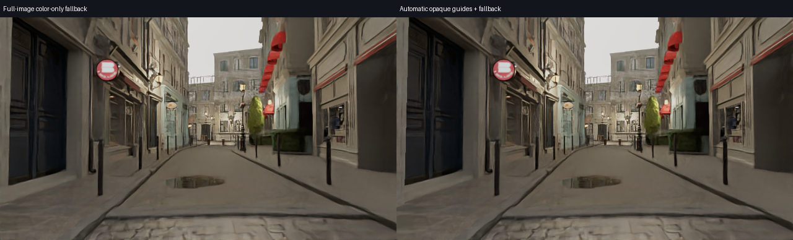
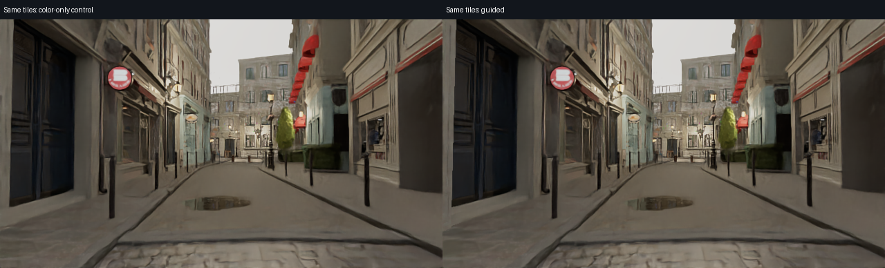
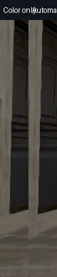

由真实材质与覆盖自动选区；每个引导块保留96像素内部上下文。玻璃、水、透明叶片、反射及上下文不足区域使用整图仅颜色去噪回退。所有块固定同一OIDN输入尺度，雨层按实际覆盖重组。
导出命令、范围与耗时
引导支持 11520 像素；其余回退。完整输出 · 实际引导权重

相同自动分区的颜色控制与引导：

由引导权重自动确定的细节范围：

这是离线输出；不保证时序稳定或整体画质通过。OIDN官方上下文与引导说明